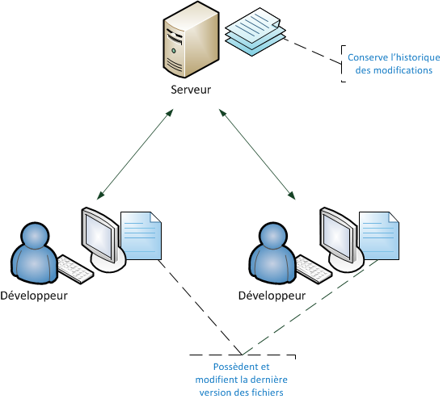
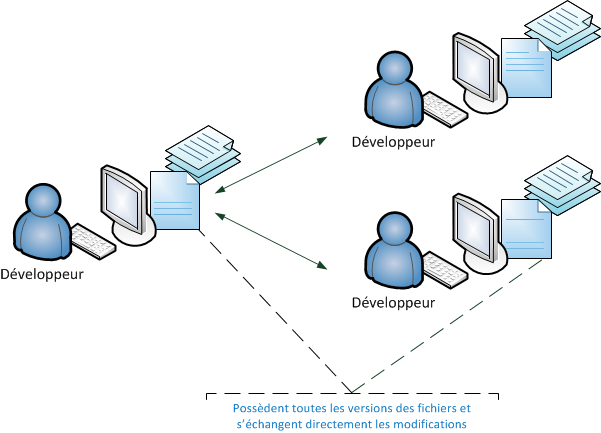
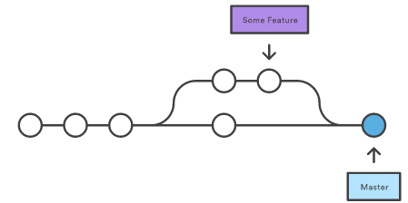
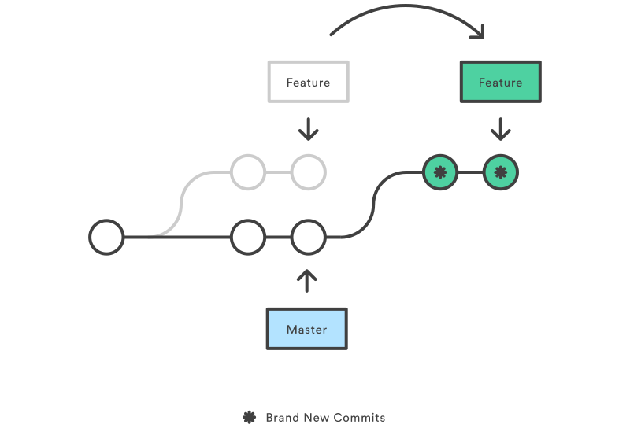
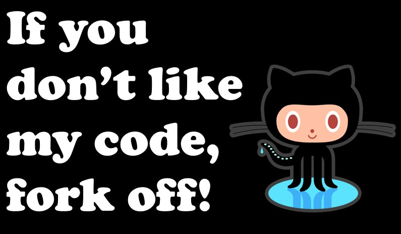
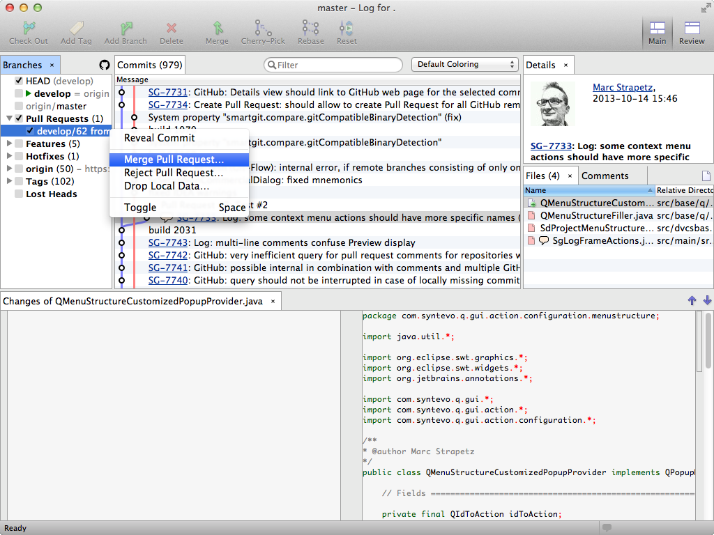

GIT
A distributed version control system
Created by Damien Marchand / @damien_marchand
Versioning ?
(or version control)
What for ?
- records changes to a file or set of files over time
- revert files back to a previous state
- who last modified something that might be causing a problem
Centralized VS Distributed
Centralized
Distributed
Usage
Git
History
- Replace BitKeeper for linux kernel
- Linus Torvald
- Published 7 April 2005
Power of Git
- speed
- easy
- branch
- fusion
- distributed
How it works ?
SHA-1 hash
Server ?

My first commit

Initialisation
git init
git init --bare
Configuration
Identity
git config user.email toto@toto.fr
git config --global user.email toto@toto.fr
Editor
git config --global core.editor gedit
git config --gloabl merge.tool vimdiff
Get config
git config --list
Git ignore
Git ignore
- Clean start
- Generic
- Good practice
git rm --cached
Status
git status
Add
git add --a

git add .

Commit
git commit -m "my commit"
Log
git diff fichier
git diff fichier --staged
git diff commit1 commit2
Back
Checkout
- Switch branch
- File(s) to stage
git checkout commit
git checkout commit file
Tag
git log
git tag 1.0.0 1b2e1d63ffTag to branch
git checkout -b branch-name V2.0
Revert
git revert commitWill add a commit
Reset
Safe reset
git reset
git reset file
Clean your commits
git reset commit
Warning
git reset --hard
Branches
Branch
Create
git branch name
Delete
git branch -d
git branch -D
Checkout
git checkout branch
git checkout -b branch
Stash
git stash
git stash list
git stash apply stash@{n}
OR
git stash pop
git stash branch branch-from-stash
Merge
git merge source-branchWill create a fusion commit.
Fast forward

When ?
3-way merge
When ?
Manage historic
Amend
git commit --amendDo not amend public commit
Rebase
git checkout feature
git rebase master
git checkout master
git merge feature
git checkout feature
git rebase master
git checkout master
git merge feature
Stash
Stash
git stash
git stash pop
git stash list
git stash save "Not a genius idea ..."
Push your code
Remote
git remote add bitbucket url-repo
Push
git push bitbucket master
Fetch
git fetch bitbucket master
git log master..bitbucket/master
git merge origin/master
Pull
Pull = Fetch + Merge
git checkout master
git pull origin master
Pull and Fast forward
git pull --rebase origin/master
Open source practices

Fork
Pull request
Services and Tools
Services


Tools


Workflows
Centralized Workflow

Presentation
- Just master
- Managing conflicts
- Like SVN
Simple for small team and tiny project.
Feature Branch Workflow

Presentation
- Encourage collaboration
- Streamline communication
- Easy to work on a particular feature without disturbing
- Master branch will never contain broken code
- Continuous integration environments
- Use pull request
Workflow

Forking Workflow

Presentation
- No central codebase
- Each has a private local and a public server
- On official repository
- Use pull request
Like contribute to project with fork.